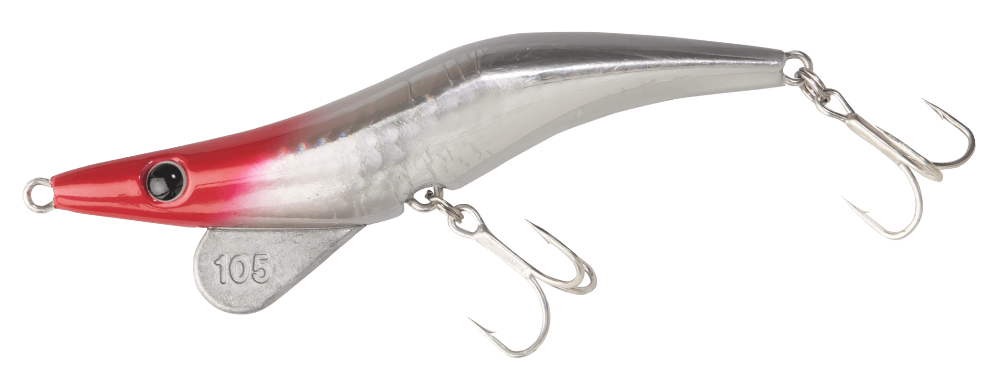
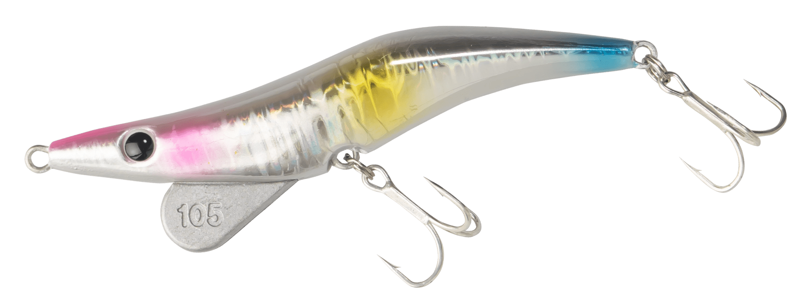
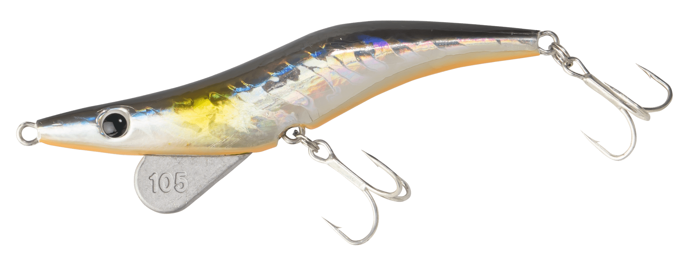
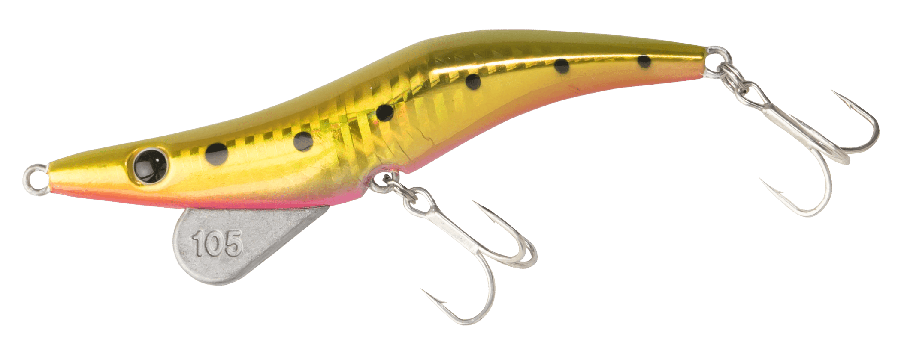

超越
（Cho-etsu!）
超越（Cho-etsu!）はBREADEN（ブリーデン）のシンキングプラグです。
「ターゲット！？魚種限定解除だ！・・・だから『超越』なのだ！」。サーフェイスでのリーピングアクションと、宙層〜ボトムのただ巻き微振動アクションという「静と動」2つのアクションを持つプラグです。シイラや青物、多くのシーバスと出会わせてきたモデルで、フィールドスタッフは相模湾のキハダ狙いにも使っています。

画像出典:BREADEN公式HP
スペック
- メーカー
- BREADEN（ブリーデン）
- タイプ
- シンキングプラグ
- ラインナップ
- 超越105（18g・105mm）
超越120（25g・120mm） - 推奨適合フック
- 105：ST-46TN #4相当
120：ST-46TN #3相当 - カラー
- 105：全10色／120：全8色
- ターゲット
- シーバス・シイラ・青物など
- 価格
- 105：1,100円／120：1,600円（税別）
▼今すぐチェック

超越の特徴
跳ねる・震える・ゆっくり落ちる、静と動のアクション
-
左右に大きく跳ねるリーピングアクション
サーフェイスでは、ロッドワークで左右に大きく跳ねる「リーピングアクション」が出せる。シイラや青物を水面で誘い出す時の武器になる。
-
ただ巻きの微振動アクション
宙層からボトムまでは、ただ巻きで艶めかしい微振動を出す。この動きで多くのシーバスを釣ってきた。
-
リアルなベイトのような微振動フォール
ゆっくりフォールしながらもしっかりアピールする「リアルベイトな姿勢移動とフォールバランス」と「震える微振動フォール」で、見切られやすい状況でも口を使わせる。
超越の使い方
水面で魚が出ている時は、ロッドをあおって左右に跳ねさせるリーピングアクションで誘います。宙層〜ボトムを探る時は、沈めてからただ巻きで微振動を出しましょう。
ナブラやベイトボールにキャストしたら、フォールで食わせる使い方も有効です。ゆっくり落ちながら震えるので、フォール中のアタリに集中しましょう。
超越の得意な状況
水面でシイラや青物がベイトを追っている時、表層から底まで探って回遊魚やシーバスを狙いたい時が得意です。
1本で表層・宙層・フォールの3通りに使えるので、ターゲットが絞り切れない時の「とりあえずの1本」にも向いています。
ワンポイント
105は18gで扱いやすく、シーバスやライトな青物向け。120は25gで飛距離と存在感があり、シイラや青物、沖のナブラ狙い向けと使い分けると選びやすいです。
サイズの使い分け
| モデル | 重さ・全長 | 推奨フック・価格（税別） |
|---|---|---|
| 超越105 | 18g・105mm | ST-46TN #4相当・1,100円 |
| 超越120 | 25g・120mm | ST-46TN #3相当・1,600円 |
※数値は公式ページより。カラーはモデルごとに異なります（105は全10色、120は全8色）。
オススメカラー
超越105のカラーから4色を紹介します。

03 レッドヘッド定番のレッドヘッド。濁りやローライトでもシルエットを出せる。

04 コットンキャンディパステル系のカラー。日中の澄んだ水に。

06 ブラックシルバー背中の黒でシルエットを強調。夜や逆光の時に。

09 ゴールドイワシ金ベースのイワシカラー。朝夕のフラッシングに。
画像出典:BREADEN公式HP
超越に似ているルアー
-
 メタルマル19
BREADEN
詳細はこちら＞
メタルマル19
BREADEN
詳細はこちら＞
同じBREADENの「魚種限定解除」ブレードジグ。もっと遠投して広く探りたい時に。
-
 ガルバ64S
DAIWA
詳細はこちら＞
ガルバ64S
DAIWA
詳細はこちら＞
DAIWAの小型シンキングペンシル。巻きで小型の回遊魚を狙う時に。
-
 魚極ペン100
RUDIE'S
詳細はこちら＞
魚極ペン100
RUDIE'S
詳細はこちら＞
根掛かりを避けて底付近を攻めるシンキングペンシル。根魚や青物を底で狙う時に。